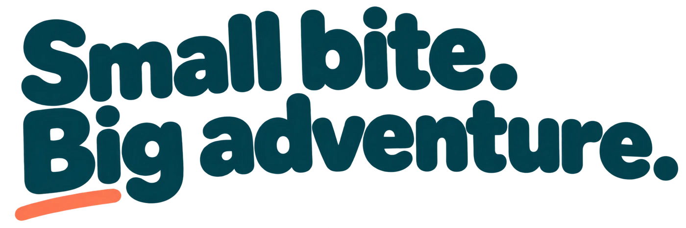
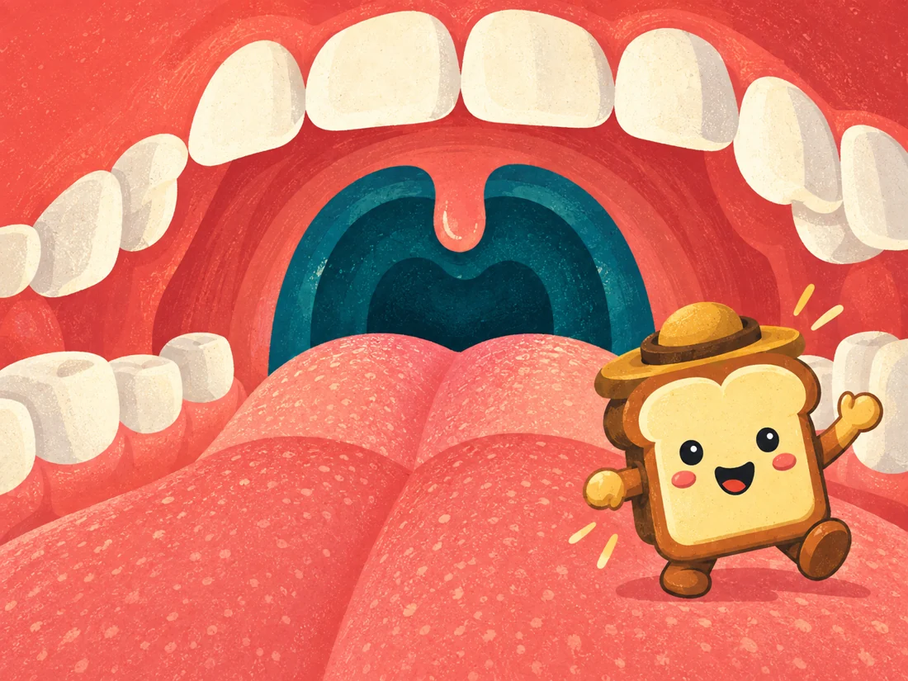
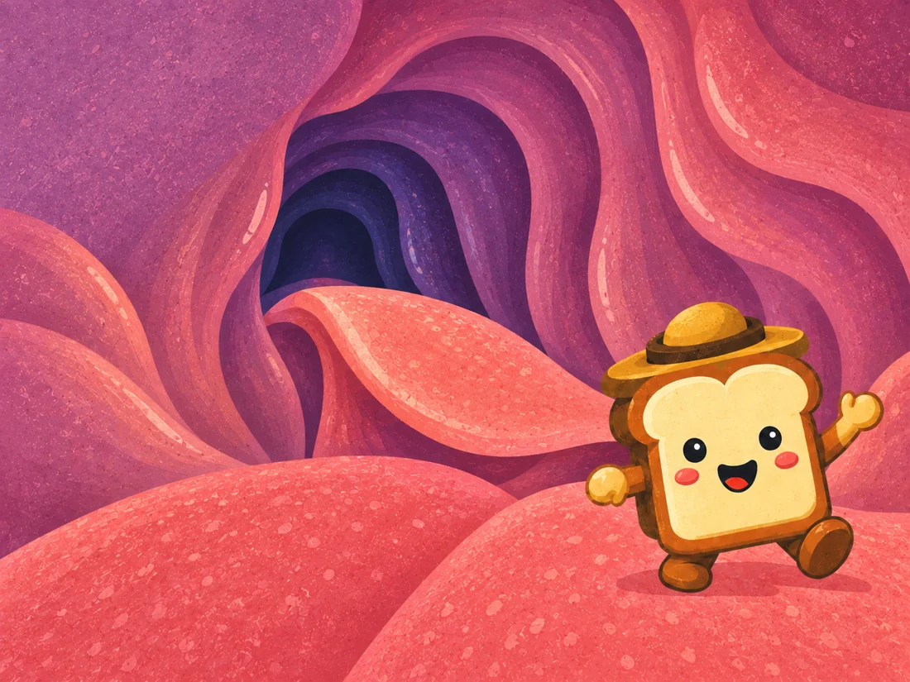
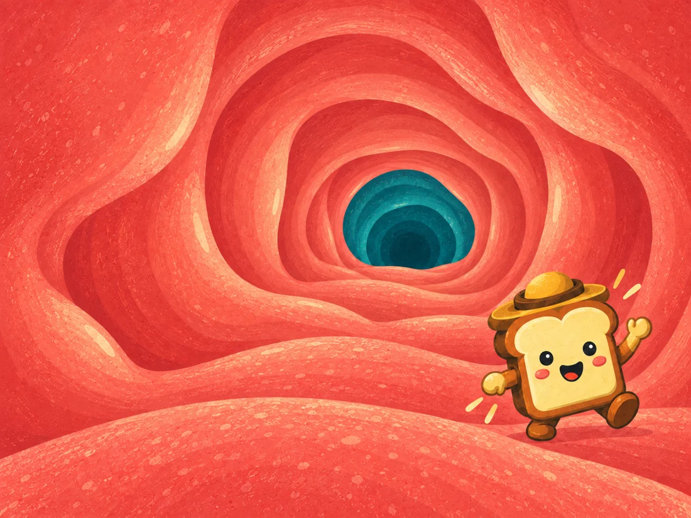
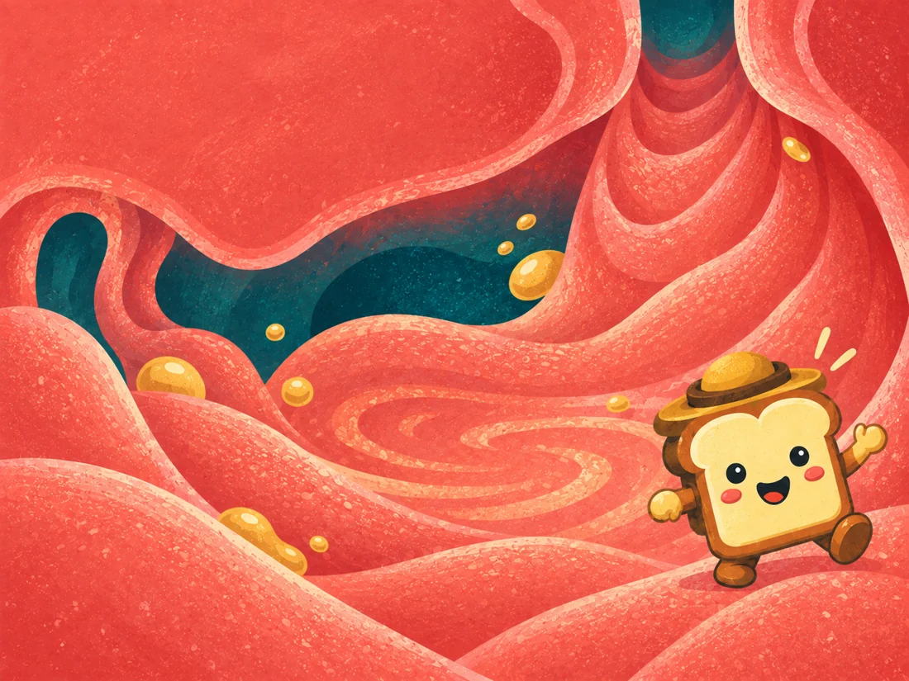
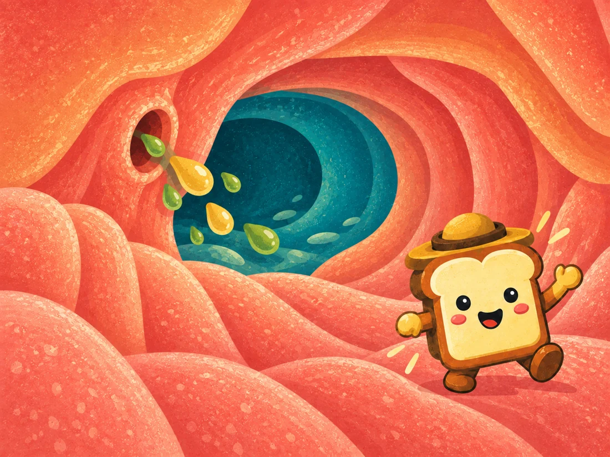
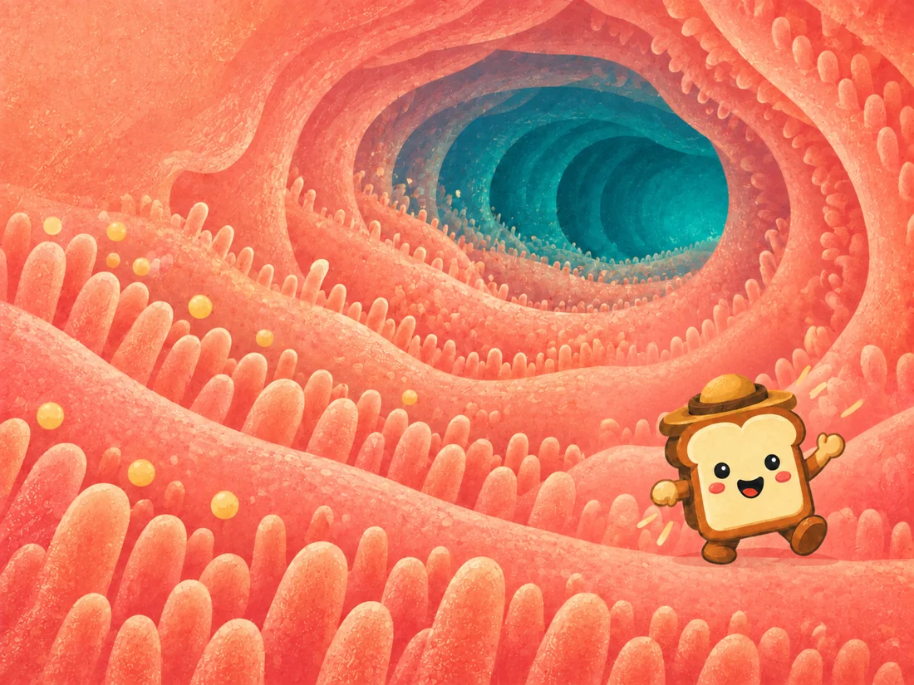
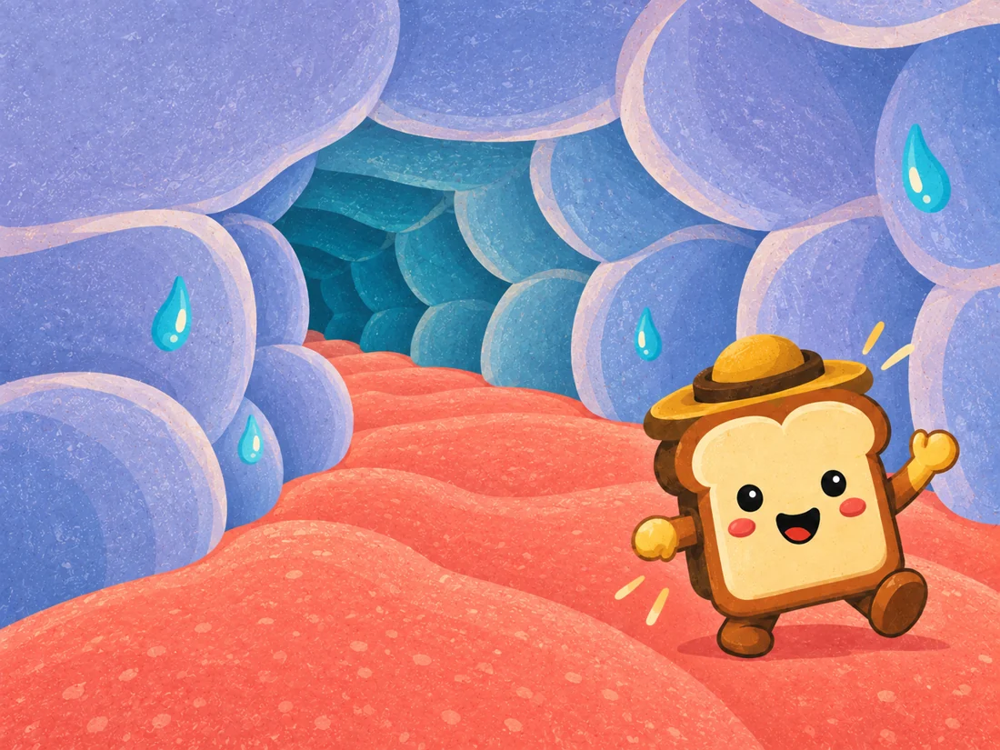
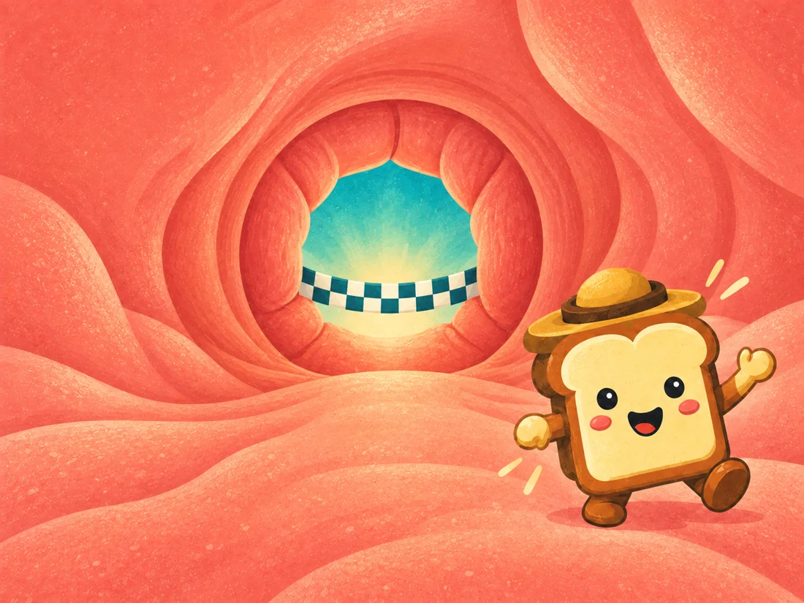

A little toast. Eight wild worlds.
One extraordinary journey through you.
Made for iPhone · Currently in TestFlight

A deliciously different adventure.
Swipe, dodge and discover your way through eight organ-inspired worlds. Quick runs. Four difficulties. Always one more try.
- 8
- worlds to explore
- 2–3
- minute runs
- 4
- ways to play
Your next stop?
Somewhere extraordinary.
From the first bite to the grand finale.
01The Mouth
The adventure begins with a bite. Collect saliva and chew your way forward.

02The Pharynx
Keep your timing sharp as you take the next step into the digestive world.

03The Esophagus
Catch a wave of muscle movement and ride it toward the stomach.

04The Stomach
Collect acid and enzymes. Give your little traveller a proper mixing.

05The Duodenum
Bile and enzymes join the journey. Bring the right ingredients together.

06Small Intestine
Find the good stuff and absorb nutrients among the tiny villi.

07Large Intestine
Make every drop count as you recover water along the winding track.

08The Grand Exit
A final dash to the finish. What a journey for one little bite.
Classic, Rush, Frenzy or Inferno. Find your pace, then beat it.